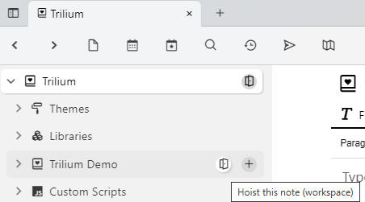
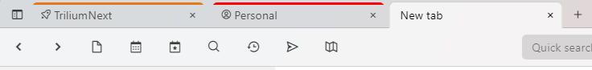

Workspace is a concept built up on top of note hoisting. It is based on the idea that a user has several distinct spheres of interest. An example might be "Personal" and "Work", these two spheres are quite distinct and don't interact together. When I focus on Work, I don't really care about personal notes.
So far workspace consists of these features:
note hoisting - you can "zoom" into a workspace subtree to focus only on the relevant notes
easy entering of workspace:

visual identification of workspace in tabs:

| Label | Description |
|---|---|
workspace
|
Marks this note as a workspace, button to enter the workspace is controlled by this |
workspaceIconClass
|
defines box icon CSS class which will be used in tab when hoisted to this note |
workspaceTabBackgroundColor
|
CSS color used in the note tab when hoisted to this note, use any CSS color format, e.g. "lightblue" or "#ddd". See https://www.w3schools.com/cssref/css_colors.asp. |
workspaceCalendarRoot
|
Marking a note with this label will define a new per-workspace calendar for Day Notes. If there's no such note, the global calendar will be used. |
workspaceTemplate
|
This note will appear in the selection of available template when creating new note, but only when hoisted into a workspace containing this template |
workspaceSearchHome
|
new search notes will be created as children of this note when hoisted to some ancestor of this workspace note |
workspaceInbox
|
default inbox location for new notes when hoisted to some ancestor of this workspace note |